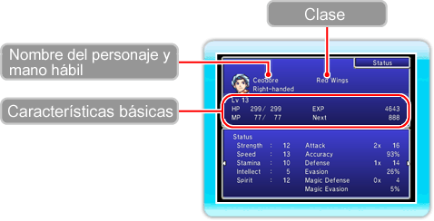
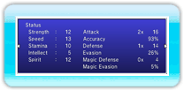
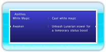

18 |
"Status" (Estado) |
 |
Aquí podrás ver el estado, el equipo y las habilidades de los personajes del grupo. Selecciona a un personaje y pulsa izquierda o derecha en 

● "Status" (Estado)Aquí puedes consultar las características de cada personaje.
 ● "Equipment"(Equipo) Consulta los objetos que el personaje tiene equipados en cada momento. 
● "Abilities"(Habilidades) Las habilidades son órdenes de combate únicas de ciertos personajes (→ pág. 21). Esta pantalla muestra las habilidades del personaje y sus efectos.
|
 |
 |
 |